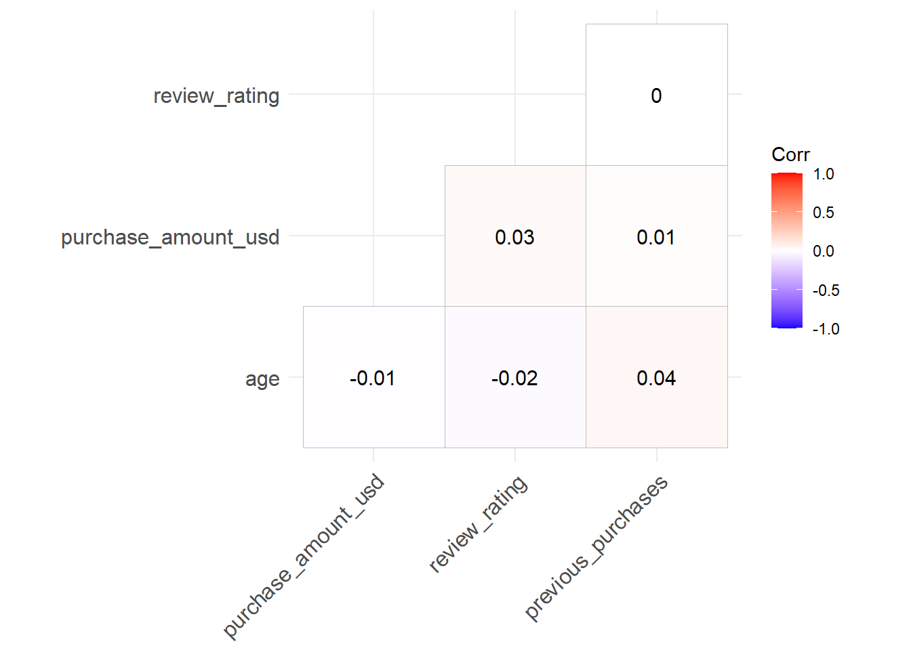

library(tidyverse)
library(broom)
library(tictoc)
library(tidymodels)
library(readr)
library(ggcorrplot)
library(lsr)
library(tidyclust)
library(factoextra)Consumer Behavior and Shopping Habits
The Consumer Behavior and Shopping Habits Dataset provides comprehensive insights into consumers’ preferences, tendencies, and patterns during their shopping experiences. This dataset encompasses a diverse range of variables, including demographic information, purchase history, product preferences, shopping frequency, and online/offline shopping behavior. With this rich collection of data, analysts and researchers can delve into the intricacies of consumer decision-making processes, aiding businesses in crafting targeted marketing strategies, optimizing product offerings, and enhancing overall customer satisfaction.
Motivation
Examine how different elements, including seasonal trends, product characteristics (like size and color), and marketing initiatives (such as discounts and promo codes), affect consumer buying choices. Determine if there are specific seasons when certain types of products see increased sales. Explore whether particular attributes of items or promotional offers have a notable impact on the volume of purchases and customer feedback ratings.
Utilize the Consumer Behavior and Shopping Habits Dataset to explore the connection between the demographics of customers (age and gender) and their shopping patterns. Investigate whether certain product categories or shopping methods are preferred by specific demographic groups. Analyze how this knowledge can be applied to develop marketing strategies that are more efficiently tailored to target audiences.
shopping_behavior <- read_csv("E:/data/shopping_behavior_updated.csv") %>%
janitor::clean_names()shopping_behavior %>%
skimr::skim()| Name | Piped data |
| Number of rows | 3900 |
| Number of columns | 18 |
| _______________________ | |
| Column type frequency: | |
| character | 13 |
| numeric | 5 |
| ________________________ | |
| Group variables | None |
Variable type: character
| skim_variable | n_missing | complete_rate | min | max | empty | n_unique | whitespace |
|---|---|---|---|---|---|---|---|
| gender | 0 | 1 | 4 | 6 | 0 | 2 | 0 |
| item_purchased | 0 | 1 | 3 | 10 | 0 | 25 | 0 |
| category | 0 | 1 | 8 | 11 | 0 | 4 | 0 |
| location | 0 | 1 | 4 | 14 | 0 | 50 | 0 |
| size | 0 | 1 | 1 | 2 | 0 | 4 | 0 |
| color | 0 | 1 | 3 | 9 | 0 | 25 | 0 |
| season | 0 | 1 | 4 | 6 | 0 | 4 | 0 |
| subscription_status | 0 | 1 | 2 | 3 | 0 | 2 | 0 |
| shipping_type | 0 | 1 | 7 | 14 | 0 | 6 | 0 |
| discount_applied | 0 | 1 | 2 | 3 | 0 | 2 | 0 |
| promo_code_used | 0 | 1 | 2 | 3 | 0 | 2 | 0 |
| payment_method | 0 | 1 | 4 | 13 | 0 | 6 | 0 |
| frequency_of_purchases | 0 | 1 | 6 | 14 | 0 | 7 | 0 |
Variable type: numeric
| skim_variable | n_missing | complete_rate | mean | sd | p0 | p25 | p50 | p75 | p100 | hist |
|---|---|---|---|---|---|---|---|---|---|---|
| customer_id | 0 | 1 | 1950.50 | 1125.98 | 1.0 | 975.75 | 1950.5 | 2925.25 | 3900 | ▇▇▇▇▇ |
| age | 0 | 1 | 44.07 | 15.21 | 18.0 | 31.00 | 44.0 | 57.00 | 70 | ▇▇▇▇▇ |
| purchase_amount_usd | 0 | 1 | 59.76 | 23.69 | 20.0 | 39.00 | 60.0 | 81.00 | 100 | ▇▇▇▇▇ |
| review_rating | 0 | 1 | 3.75 | 0.72 | 2.5 | 3.10 | 3.7 | 4.40 | 5 | ▇▇▇▇▆ |
| previous_purchases | 0 | 1 | 25.35 | 14.45 | 1.0 | 13.00 | 25.0 | 38.00 | 50 | ▇▇▇▇▇ |
The data summary implies that the dataset is complete with no missing values, which is an ideal scenario for data analysis. This means that all 3,900 entries across the 18 columns are filled with valid data points. The absence of missing values suggests that you won’t need to perform any data imputation (a process to fill in missing data), and you can proceed directly to analyze the data as it is. Having a complete dataset can provide a more robust foundation for any statistical analysis or modeling work, as it ensures that the results are not affected by gaps in the data.
Explore the data
shopping_behavior %>%
select(is.numeric) %>%
select(-customer_id) %>%
cor() %>%
ggcorrplot(type = "lower", lab = TRUE)
The very low correlation values suggest that there is little to no linear relationship between these variablesThe very low correlation values suggest that there is little to no linear relationship between these variables
cramers_matrix <- function(x,y) {
tbl <- shopping_behavior %>%
select(x,y) %>%
table()
chisq_pval <- round(chisq.test(tbl)$p.value, 4)
cram_v <- round(cramersV(tbl), 4)
data.frame(x, y, chisq_pval, cram_v)
}
shopping_behavior %>%
select(is.character) %>%
names() %>%
sort() %>%
combn(2) %>%
t() %>%
data.frame(stringsAsFactors = F) -> df_crv
# apply function to each variable combination
df_res = map2_df(df_crv$X1, df_crv$X2, cramers_matrix)
# plot results
df_res %>%
ggplot(aes(x,y,fill=cram_v))+
geom_tile()+
geom_text(aes(x,y,label=round(cram_v,2)))+
scale_fill_gradient(low="#E6D4AC", high="#871717")+
theme_classic()+
theme(axis.text.x = element_text(angle=30, hjust=1))+
labs(x = NULL, y = NULL)Cramér’s V is a statistical measure used to determine the strength of association between two categorical variables. It is useful because unlike Pearson’s correlation, which requires numerical data, Cramér’s V can be applied to categories like gender or subscription status, which don’t have numerical values or a specific order. It provides a value between 0 and 1, where 0 means no association and 1 indicates a perfect association. This makes it ideal for analyzing data where you want to understand the relationship between two categorical variables without assuming any kind of numerical relationship.
- There is a strong association (0.7) between subscription_status and category, implying that the type of subscription a customer has may significantly relate to the categories of items they are interested in.
- A significant association (1) is observed between promo_code_used and discount_applied, which is intuitive as the use of promo codes is often directly linked to receiving discounts.
- Another strong association (0.6) is noted between item_purchased and gender, suggesting that gender may play a role in the type of items purchased.
- All other associations are weak (values much less than 0.5), indicating little to no association between those pairs of variables.
Let take a closer look at these variables
shopping_behavior %>%
count(item_purchased, category) %>%
pivot_wider(names_from = category,
values_from = n) %>%
arrange(desc(Accessories),
desc(Clothing),
desc(Footwear),
desc(Outerwear)) # A tibble: 25 × 5
item_purchased Accessories Clothing Footwear Outerwear
<chr> <int> <int> <int> <int>
1 Jewelry 171 NA NA NA
2 Belt 161 NA NA NA
3 Sunglasses 161 NA NA NA
4 Scarf 157 NA NA NA
5 Hat 154 NA NA NA
6 Handbag 153 NA NA NA
7 Backpack 143 NA NA NA
8 Gloves 140 NA NA NA
9 Blouse NA 171 NA NA
10 Pants NA 171 NA NA
# ℹ 15 more rowsSince each item belong to identical category, the variable category is no needed for the model.
shopping_behavior %>%
count(promo_code_used,discount_applied) %>%
spread(key = promo_code_used, value = n, fill = 0)# A tibble: 2 × 3
discount_applied No Yes
<chr> <dbl> <dbl>
1 No 2223 0
2 Yes 0 1677shopping_behavior %>%
count(promo_code_used,subscription_status) %>%
spread(key = promo_code_used, value = n, fill = 0)# A tibble: 2 × 3
subscription_status No Yes
<chr> <dbl> <dbl>
1 No 2223 624
2 Yes 0 1053shopping_behavior %>%
count(promo_code_used,gender) %>%
spread(key = promo_code_used, value = n, fill = 0)# A tibble: 2 × 3
gender No Yes
<chr> <dbl> <dbl>
1 Female 1248 0
2 Male 975 1677For the promo_code_used, it appeared that promo_code_used and discount_applied is identical, so wen can remove discount_applied. From subscription_status, we can interpret that all individuals with a ‘Yes’ in subscription status are associated with a ‘Yes’ in the other variable, indicating a potential strong link between having a subscription and the condition being met. There’s a clear split where no cases of ‘Yes’ in subscription status correspond to a ‘No’ in the other variable. And the last table suggests a gender difference in relation to the unnamed variable: all female cases are linked to ‘No’, while male cases are mixed, with a larger number corresponding to ‘Yes’.
# shopping_behavior %>%
# count(color)
#
#
# shopping_behavior %>%
# count(payment_method, promo_code_used) %>%
# spread(key = promo_code_used, value = n) %>%
# left_join(shopping_behavior %>%
# count(payment_method)) %>%
# rename(total = "n")
#
# shopping_behavior %>%
# count(shipping_type)shopping_behavior %>%
select(gender, purchase_amount_usd) %>%
group_by(gender) %>%
summarise(total = sum(purchase_amount_usd),
ratio = round(sum(purchase_amount_usd)/sum(shopping_behavior$purchase_amount_usd),2))# A tibble: 2 × 3
gender total ratio
<chr> <dbl> <dbl>
1 Female 75191 0.32
2 Male 157890 0.68ggplot(shopping_behavior) +
aes(x = purchase_amount_usd) +
geom_histogram(bins = 30L, fill = "#E6D4AC") +
theme_minimal() +
facet_wrap(vars(gender))- Males significantly dominate the market in terms of total spending, accounting for 67% of all purchases. In contrast, females contribute about 32% to the total purchasing volume. This disparity underscores distinct shopping patterns and preferences between the genders, possibly influenced by differences in shopping habits, product interests, or economic factors.
shopping_behavior %>%
count(promo_code_used,frequency_of_purchases ) %>% ggplot(aes(promo_code_used,frequency_of_purchases,fill=n))+
geom_tile() +
geom_text(aes(label=n))+
scale_fill_gradient(low="#E6D4AC", high="#871717")+
theme_classic() +
theme(axis.text.x = element_text(angle=30, hjust=1))+
labs(x = NULL, y = NULL)- The lack of impact from promo code usage on purchasing patterns could indicate that customers prioritize other factors, such as brand loyalty or product quality, over discounts. It may also suggest the need for improved marketing strategies to highlight the benefits of promo codes or to ensure they are competitive enough to influence buying decisions.
shopping_behavior %>%
mutate(age = cut(age,
breaks = c(18, 25, 30, 35, 40, 45, 50, 55, 60, 65, Inf),
labels = c("18-24", "25-29", "30-34", "35-39", "40-44", "45-49", "50-54", "55-59", "60-64", "65+"),
right = FALSE,include.lowest = TRUE)) %>%
count(age, category) %>%
ggplot(aes(age,category,fill=n))+
geom_tile() +
geom_text(aes(label=n))+
scale_fill_gradient(low="#E6D4AC", high="#871717")+
theme_classic()+
theme(axis.text.x = element_text(angle=30, hjust=1))+
labs(x = NULL, y = NULL)shopping_behavior %>%
mutate(age = cut(age,
breaks = c(18, 25, 30, 35, 40, 45, 50, 55, 60, 65, Inf),
labels = c("18-24", "25-29", "30-34", "35-39", "40-44", "45-49", "50-54", "55-59", "60-64", "65+"),
right = FALSE,include.lowest = TRUE)) %>%
count(age, frequency_of_purchases) %>%
ggplot(aes(age,frequency_of_purchases,fill=n))+
geom_tile() +
geom_text(aes(label=n))+
scale_fill_gradient(low="#E6D4AC", high="#871717")+
theme_classic() +
theme(axis.text.x = element_text(angle=30, hjust=1))+
labs(x = NULL, y = NULL)Clothing emerges as the most popular product category across all consumer demographics, consistently favored by a wide range of shoppers regardless of age, gender, or other factors. This trend highlights the universal appeal of clothing items among consumers, making it a pivotal segment in the retail market.
Accessories maintain a steady level of popularity across various age groups, with a notable exception in the younger (15-25 years old) and older (65-75 years old) demographics. In these specific age brackets, the demand for accessories seems to dip, possibly due to differing fashion preferences or lifestyle needs.
Footwear, while generally popular, shows a distinct spike in popularity among consumers aged 45-55. This age group demonstrates a particular affinity for footwear, possibly driven by a blend of comfort, style, and functionality that appeals to this demographic.
Outerwear enjoys a remarkable and consistent level of popularity across all age groups, suggesting its essential role in consumers’ wardrobes. Its universal appeal might be attributed to a combination of practicality, style, and the diverse range of options available in the market.
Model
Prepare Data with Recipe: A recipe (clust_rec) is created to preprocess the shopping_behavior data. The process includes:
- Converting all character-type variables to factors.
- Removing specific variables (
customer_id,discount_applied,color,shipping_type,payment_method) that are not relevant for clustering. - Scaling all numeric predictors to ensure they are on the same scale. K-means clustering is sensitive to the scale of the data. Variables on larger scales can dominate the clustering process, leading to biased results
- Transforming all factor predictors into dummy variables using one-hot encoding since K-means requires numerical input
clust_spec <- k_means(num_clusters = 3)
clust_rec <- recipe(~.,data = shopping_behavior %>%
mutate_if(is.character, as.factor)) %>%
step_rm(customer_id,discount_applied, color, shipping_type, payment_method) %>%
step_scale(all_numeric_predictors()) %>%
step_dummy(all_factor_predictors() ,one_hot = TRUE)
clust_wf <- workflow() %>%
add_recipe(clust_rec) %>%
add_model(clust_spec)
clust_fit <- fit(clust_wf, shopping_behavior)
clust_fit %>%
augment(shopping_behavior)# A tibble: 3,900 × 19
customer_id age gender item_purchased category purchase_amount_usd location
<dbl> <dbl> <chr> <chr> <chr> <dbl> <chr>
1 1 55 Male Blouse Clothing 53 Kentucky
2 2 19 Male Sweater Clothing 64 Maine
3 3 50 Male Jeans Clothing 73 Massach…
4 4 21 Male Sandals Footwear 90 Rhode I…
5 5 45 Male Blouse Clothing 49 Oregon
6 6 46 Male Sneakers Footwear 20 Wyoming
7 7 63 Male Shirt Clothing 85 Montana
8 8 27 Male Shorts Clothing 34 Louisia…
9 9 26 Male Coat Outerwe… 97 West Vi…
10 10 57 Male Handbag Accesso… 31 Missouri
# ℹ 3,890 more rows
# ℹ 12 more variables: size <chr>, color <chr>, season <chr>,
# review_rating <dbl>, subscription_status <chr>, shipping_type <chr>,
# discount_applied <chr>, promo_code_used <chr>, previous_purchases <dbl>,
# payment_method <chr>, frequency_of_purchases <chr>, .pred_cluster <fct>clust_fit %>% tidy()# A tibble: 3 × 107
age purchase_amount_usd review_rating previous_purchases gender_Female
<dbl> <dbl> <dbl> <dbl> <dbl>
1 2.91 2.53 5.22 1.83 0
2 2.88 3.44 5.38 1.80 0.518
3 2.90 1.60 5.12 1.64 0.470
# ℹ 102 more variables: gender_Male <dbl>, item_purchased_Backpack <dbl>,
# item_purchased_Belt <dbl>, item_purchased_Blouse <dbl>,
# item_purchased_Boots <dbl>, item_purchased_Coat <dbl>,
# item_purchased_Dress <dbl>, item_purchased_Gloves <dbl>,
# item_purchased_Handbag <dbl>, item_purchased_Hat <dbl>,
# item_purchased_Hoodie <dbl>, item_purchased_Jacket <dbl>,
# item_purchased_Jeans <dbl>, item_purchased_Jewelry <dbl>, …we have the result of centers of the clusters
Initially, i used k = 3 but i want to try out all the possible k and detemine the best k using elbow method.
k_range <- 1:10
tot_res <- tibble()
set.seed(123)
for(k in k_range) {
clust_spec <- k_means(num_clusters = k)
clust_wf <- workflow() %>%
add_recipe(clust_rec) %>%
add_model(clust_spec)
clust_fit <- fit(clust_wf, shopping_behavior)
tot_res <- tot_res %>% bind_rows(clust_fit %>% glance())
}
tot_res %>%
bind_cols(k =1:10) %>%
ggplot()+
aes(k,tot.withinss)+
geom_line(alpha = 0.8)+
geom_point(size = 1.5)+
theme_bw()
I don’t see a major “elbow” 💪 but I’d say that k = 4 looks pretty reasonable
clust_spec <- k_means(num_clusters = 4)
clust_wf <- workflow() %>%
add_recipe(clust_rec) %>%
add_model(clust_spec)
clust_fit <- fit(clust_wf, shopping_behavior)
clust_results <- extract_fit_engine(clust_fit)
cluster_assignments <- clust_results$cluster
data_for_plotting <- select(shopping_behavior, -customer_id)
data_for_plotting$cluster <- factor(cluster_assignments)
data_numeric <- model.matrix(~ . - 1, data = data_for_plotting)
data_numeric <- na.omit(data_numeric)
cluster_centers <- as.data.frame(clust_results$centers)
fviz_cluster(list(data = data_numeric, cluster = cluster_assignments),
geom = "point",
stand = FALSE,
ellipse.type = "norm",
centers = cluster_centers) +
theme_bw()Insights and Conclusions
The k-means result does not show a potential grouping of the data into four clusters, with varying degrees of separation. However, we can still conclude some insights:
- Males account for 67% of the total spending, while females contribute 32% to purchases. - The usage of promo codes doesn’t seem to have a significant impact on purchase behavior, and this indicate that customers prioritize other factors, such as brand loyalty or product quality, over discounts
- Clothing is the most popular product category across all consumer demographics.
- Accessories are equally popular across age groups, except for those aged 15-25 and 65-75.
- Footwear is particularly popular among the 45-55 age group.
- Outerwear enjoys consistent popularity across all age groups.
- Males account for 67% of the total spending, while females contribute 32% to purchases.